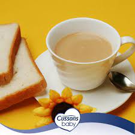

Tea

Description
This recipe for preparing tea is predominant among West-Africans but it is
enjoyed by people all over the world, because it is not only appetizing,
but also very easy to prepare.
Ingredients
- milo
- sugar
- milk (Diary or non diary)
- water
- bread
- ice cubes
Steps
-
pour your milo or chocolate powder into any cup of your choice according
to your desired quantity.
- add your sugar
- add your powdered milk
- pour water into the mixture and stir till adequately mixed
- add your liquid milk and or ice cubes if you prefer those.
- stir again and it is ready.
- you can serve with bread
Back to homepage